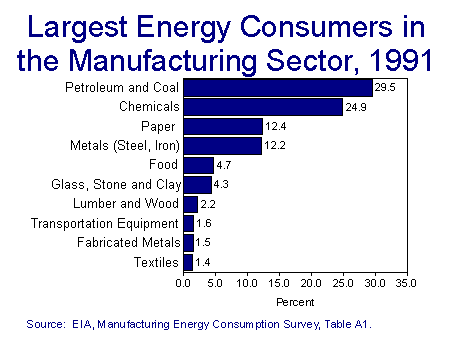

| |
1991

Executive Summary
The Manufacturing Consumption of Energy 1991 report presents statistics about the energy consumption of the manufacturing sector, based on the 1991 Manufacturing Energy Consumption Survey (MECS). The MECS is the only comprehensive source of national-level data on U.S. manufacturing energy use. The 1991 MECS is the third in an ongoing series of surveys conducted at 3-year intervals beginning in 1985. Pursuant to a provision of the Energy Policy Act of 1992, the MECS will be conducted biennially beginning in 1994.
The MECS surveys a nationally representative sample of manufacturing establishments by means of mailed questionnaires. The 1991 sample represented 98 percent of the U.S. manufacturing sector universe, which consists of all manufacturing establishments in the 50 States and the District of Columbia. Compared with the 1988 MECS, the designed sample size for 1991 was increased from 12,065 manufacturing establishments to 16,054 establishments.
The following are some of the key findings of the survey:
- The Primary Consumption of Energy for All Purposes in the manufacturing sector was 20.3 quadrillion Btu of energy in 1991, compared with 20.1 quadrillion Btu in 1988. About two-thirds of this amount was used to produce heat and power and to generate electricity, with about one-third being consumed as raw material input.
- The most common energy sources-natural gas, net electricity, coal, liquefied petroleum gas (LPG), residual and distillate fuel oil, and coke-made up 64 percent of Primary Consumption.
- The amount of Total Inputs of Energy for Heat, Power, and Electricity Generation was 15.0 quadrillion Btu, compared with 15.5 quadrillion Btu in 1988.
- The byproduct fuels-blast furnace gas, waste gas, petroleum coke, pulping liquor, wood byproducts, and waste oils/materials-made up 28 percent of Total Inputs.
- End-use allocation was collected for about 65 percent of Total Inputs (9.7 quadrillion Btu). This consumption was allocated to three groups of end uses: indirect uses, mainly boiler fuel (3.3 quadrillion Btu); direct process uses, including use in motors, ovens, strip heaters, and kilns (5.0 quadrillion Btu); and direct non-process uses, including facility space-conditioning, facility lighting, other facility support, onsite transportation, electricity generation, and other miscellaneous uses (1.2 quadrillion Btu). Manufacturers consumed an additional 5.3 quadrillion Btu of energy for which end uses were not assigned. (The 1991 MECS collected data on end-use allocation for the first time.)
- Manufacturers had the capability to switch 2.8 quadrillion Btu of all the electricity, natural gas, distillate and residual fuel oils, coal, and LPG they used, representing 28 percent of their actual consumption. (Manufacturers are said to have a fuel-switching capability if they are able to meet their requirements for heat, power, and electricity generation by substituting one energy source for another within 30 days without modifying the equipment that consumes the fuel and if they can resume the same level of production following the switch.)
- Manufacturers required an nonswitchable minimum of 7.0 quadrillion Btu of these energy sources, which was 72 percent of their actual consumption of these fuels. The fuels having the highest nonswitchable minimum requirements were, in order, natural gas, electricity and coal.
- Manufacturers often used coal and natural gas whenever possible, even though they could have used another energy source instead. Price was apparently the primary reason that manufacturers switched energy sources whenever they were able to do so.
File Last Modified: April 1, 1997
- Contact:
- robert.adler@eia.doe.gov
- Robert Adler
- Project Manager
- Phone: (202) 586-1134
- Fax: (202) 586-0018
URL: http:www.eia.gov/emeu/mecs/mecs91/consumption/mecs2a.html
If you are having any technical problems with this site, please contact the EIA Webmaster at
wmaster@eia.doe.gov
|